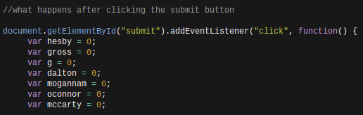
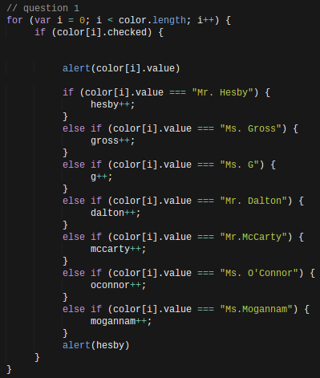

For the big project, my partner and I made a quiz that would record the number chosen the most in the quiz, and match that mode with a teacher once the quiz was submitted. My major role in the project was writing the for loops for the JS (and to make half of the html).
To start off, you want to do simple things like gather all of the elements from the html page. After this was done, I moved on to making each teacher a variable with their name as the identifier following after and giving each teacher var a value of 0, which would be stored. Doing this came in handy later on, when I made the for loops that would later on send an alert to the user to tell them which teacher they were most like.
Now to the for loops. For each question we had on the quiz, there would be a for loop which contained else if statements and detects the options the user chooses. The first statement of the for loop which will start the loop, than a second statement which will check if it is true or false (a condition will be used) and a third statement which decides the value increase after the for loop has been ran. Inside the loop are all of the if statements that would hold the data (which would lead to to result). The condition would then go through each of these statements in the for loop to see if they are true and if not, would move onto the next statement. This is continued until each of the questions have their inputed data collected and the result is found, thus giving the user his/her result (which comes in the form of a teacher’s name).
Looking at the code below, answer one JS for loop is shown. It shows the selected color which is equal to a value (which we set as the teacher's’ name). This would be stored as one point, that would later amount to the total points/result. Each of the else if statements below will be checked until the true condition is found.
